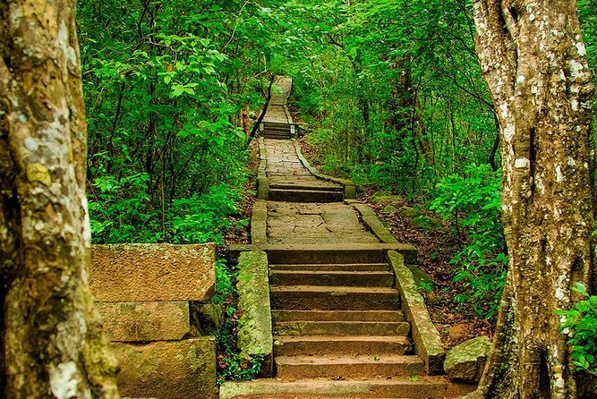

Key Attractions

Go on thrilling elephant safaris in Habarana National Park to see elephants, deer, and other wildlife in their natural habitat.

Habarana Lake is perfect for a serene boat ride, birdwatching, and photography with lush greenery all around.

Experience traditional Sri Lankan village life with guided tours, local food, and cultural interactions with friendly villagers.

Minneriya National Park is famous for large elephant gatherings and rich biodiversity, ideal for safari adventures.

Explore Ritigala Forest Monastery, an ancient site surrounded by untouched forests, ancient ruins, and serene hiking trails.